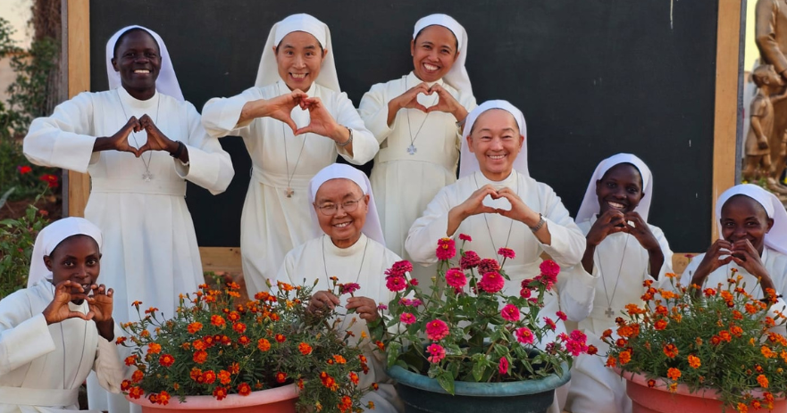

A Journey of Faith and Love
Since 1964
Our school is a testament to a legacy of educational excellence & compassionate service.
Established with a profound commitment to nurturing the minds and hearts of young learners, our institution stands as a symbol of hope and empowerment in the realm of education. With a rich history spanning over six decades, we have remained steadfast in our mission to provide high-quality education that not only equips students with academic knowledge and technical skills but also instills in them core Christian values.

People behind the Mission
Beneficiaries

Impacts on the Life of the Students